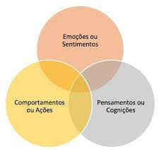

DEPRESSÃO NO AMBIENTE ESCOLAR
Maior qualidade de vida nas escolas

Menu Principal
- Home
- Fotos
- Fale conosco
Depressão é uma doença psiquiátrica, crônica e recorrente,
que altera o humor e costuma estar associada com baixa autoestima e culpa, e normalmente traz consigo distúrbios
do apetite (comer demais, ou praticamente nada), e de sono (dormir demais, ou quase nada),
entretanto um dos aspectos mais nocivos é a falta de perspectivas, um sentimento de ausência de futuro,
de impossibilidade de solução dos problemas, que muitas vezes leva até ao suicídio.
Publicado por: Central Press